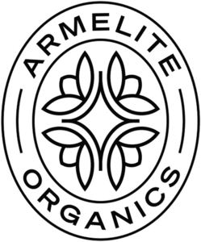

Trade Mark Journal No.2025/013 28 March 2025
WO0000001837117 (3,5,29,30,31)
Office of origin: Austria
Date of International Registration:13 November 2024
Date of designation in the UK:
13 November 2024

International priority date claimed: 12 June 2024
(Austria)
- Class 3
- Non-medicated dentifrices; bleaching preparations; grinding preparations; perfumery; ethereal oils; non-medicated cosmetics; non-medicated hair lotions; laundry preparations; cleaning preparations; polishing preparations; grease-removing preparations; soap; cosmetics; dentifrices; cosmetics; oils for perfumes and scents; perfumery and fragrances; deodorants for personal use [perfumery]; all the aforesaid goods being made with organic ingredients.
- Class 5
- Sanitary preparations for medical purposes; dietary supplements for human beings and animals; disinfectants; vermin repelling preparations; pest control preparations and articles; fungicides for killing vermin; pesticides; pharmaceuticals; veterinary preparations; food for babies; plasters; medical dressings; teeth filling material; dental impression materials; fungicides; herbicides; medical preparations; dietetic substances adapted for medical use; vitamin and mineral supplements for pets; mineral dietary supplements for humans; vitamin and mineral supplements; liquid vitamin supplements; dietetic infusions for medical use; dietary supplement drink mixes; food supplements; dietetic preparations adapted for medical use; dietary supplements; dietary and nutritional supplements; dietary and nutritional preparations; aloe vera preparations for pharmaceutical purposes; therapeutic food supplements containing ginseng; dietary supplements in powder form; all the aforesaid goods being made with organic ingredients.
- Class 29
- Meat extracts; fruit, preserved; vegetables, preserved; frozen fruits; frozen vegetables; dried fruit; vegetables, dried; vegetables, cooked; eggs; edible oils and fats; meat; fish, not live; game, not live; milk; milk products; aloe vera prepared for human consumption; jellies, jams, compotes, fruit and vegetable spreads; pumpkins, preserved; processed pumpkin seeds; processed artichokes; artichokes, preserved; processed poultry; deep-frozen poultry; poultry, not live; preserves of poultry; cooked poultry; frozen poultry; fresh poultry; all the aforesaid goods being made with organic ingredients.
- Class 30
- Rice; edible ices; sugar, honey, treacle; salt; mustard; spices; cooling ice; yeast; baking powder; vinegar; sauces; sauces [condiments]; seasonings; coffee; tea; cocoa; tapioca; sago; flour; cereal preparations; bread; pastries; coffee substitutes; prepared desserts [confectionery]; candy coated confections; confectionery items coated with chocolate; flour confectionery; all the aforesaid goods being made with organic ingredients.
- Class 31
- Natural plants and flowers; live animals; malt; seeds for planting; fresh fruits and vegetables; garden herbs, fresh; fresh onions; seedlings; seeds for planting; animal foodstuffs; beverages for animals; aloe vera plants; raw and unprocessed agricultural products; raw and unprocessed aquacultural products; raw horticultural products; unprocessed horticultural products; raw and unprocessed forestry products; raw and unprocessed grains; raw and unprocessed seeds; all the aforesaid goods being organic or derived from organic produce.
"GECCO" Import-Export Handelsgesellschaft m.b.H.
Representative: ImPrint, 4 Tabernacle Street London EC2A 4LU UNITED KINGDOM